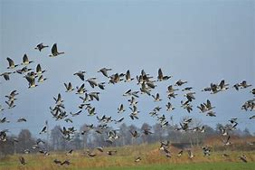

Avistamientos de Aves en Chile en los Años 2015 - 2022
IIC2026 - Visualización de la Información
Filtro por Especie
Seleccione el pájaro para escucharlo en la naturaleza
Todas las Especies
Detalles

Selecciona una especie para ver más detalles sobre su avistamiento y características.